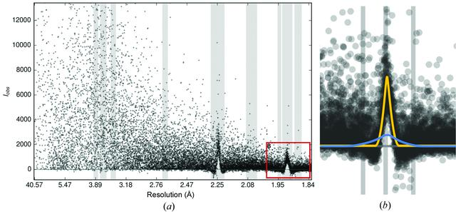
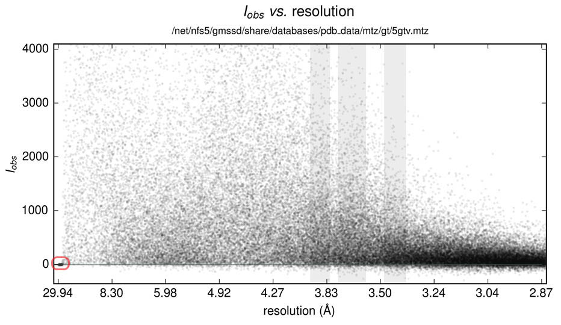
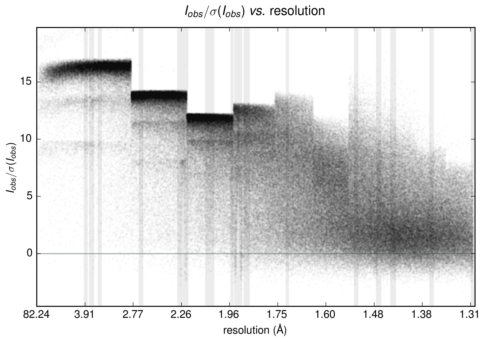
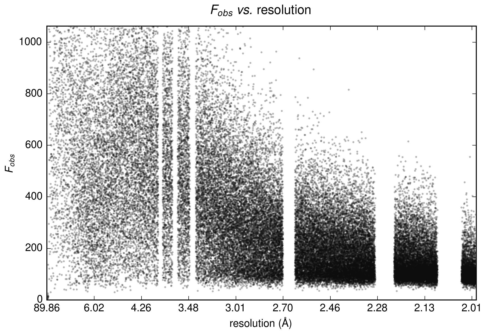
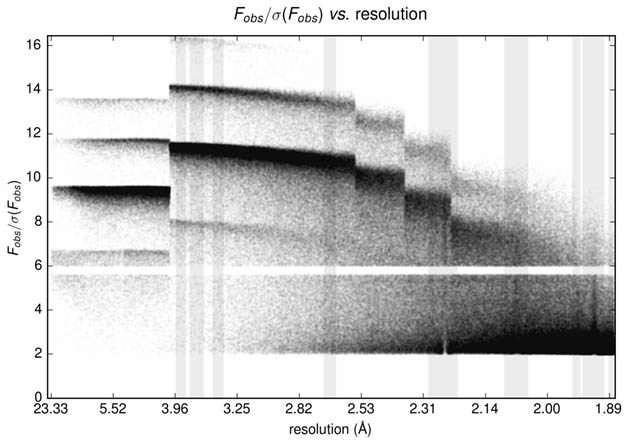
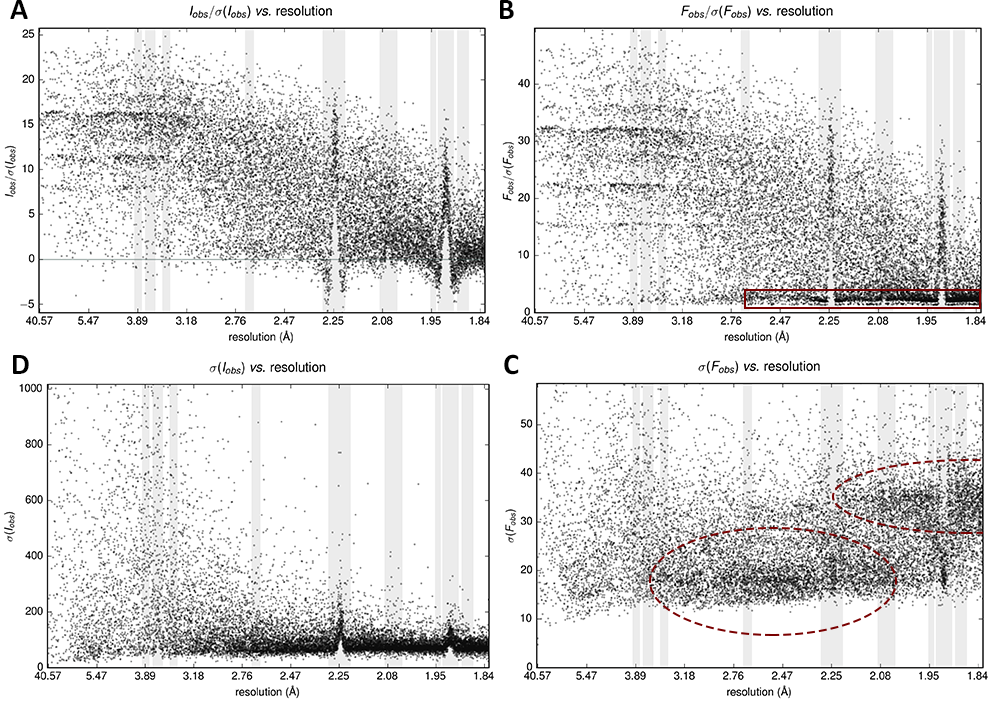
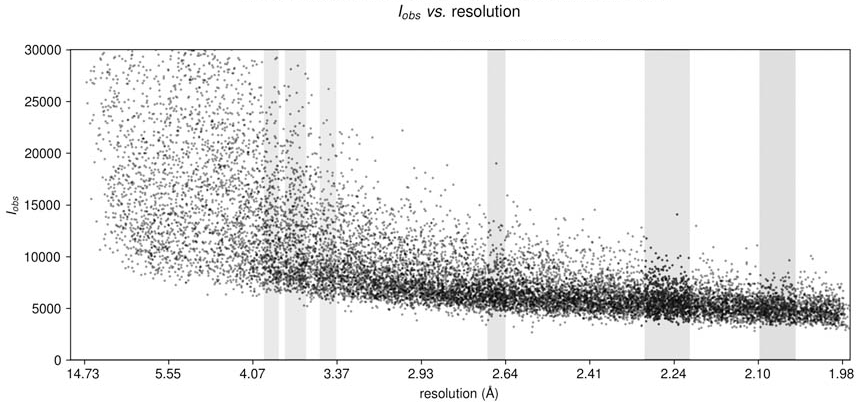
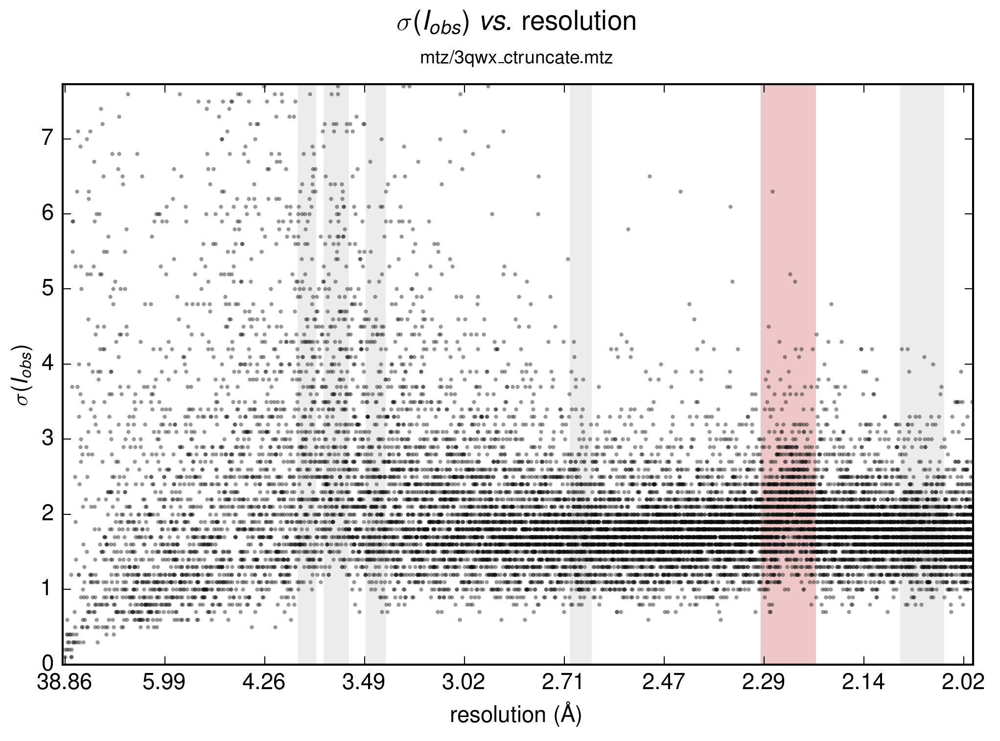

Reflection data diagnostics with Auspex plots¶
AUSPEX is a diagnostic tool for graphical X-Ray data analysis, which allows users to detect various features, problems and artifacts, listed below, in the reflection data. The detectable issues may relate to both data properties and features of software used for data processing. AUSPEX operates on merged reflection data sets.
Ice-ring detection¶
If the background was poorly estimated during data integration, ice rings may become visible as distinct peaks in the distribution of intensity against resolution. The ice rings occur at specific resolutions, as shown below, and, in case of difficulties with structure solution, the corresponding reflections may need to be removed from the dataset.
Image is taken from http://www.auspex.de/
Click on image to read more
Beamstop¶
Reflections with intensity or amplitude values near 0 at low resolution indicate that the beam stop was not masked or not masked out completely at integration. The correct beam stop mask should be applied during data processing or low resolution cutoff should be used.
Image is taken from http://www.auspex.de/
Click on image to read more
Manhattan Skyline¶
This is a feature peculiar to datasets processed with HKL/SCALEPACK software, and does not require corrective actions.
Image is taken from http://www.auspex.de/
Click on image to read more
Missing Rings¶
If entire resolution ranges, corresponding to spheres in reciprocal space and rings on an image around the beam stop, are missing, this is typically due to the ice-rings masked-out. In other cases, this feature may need additional investigation.
Image is taken from http://www.auspex.de/
Click on image to read more
Missing Line¶
A missing line between 5.6 and 6.0 Fobs/σ(Fobs) is, most probably, due to a bug in the lookup table in CTRUNCATE and TRUNCATE, respectively.
Image is taken from http://www.auspex.de/
Click on image to read more
Multiplicity Ladder¶
This feature indicates the discrete character of multiplicity in the data, which sometimes manifests itself at low resolution. This is not a pathology and does not require any corrective actions.

Image is taken from http://www.auspex.de/
Click on image to read more
Separation of Distributions¶
These effects indicate deviations from ideal distribution of Wilson type, which may require various manipulations (such as resolution cut-offs) in severe cases.
Image is taken from http://www.auspex.de/
Click on image to read more
Background Misestimation¶
Systematically high reflection intensities in the absence of weak reflections indicate an incorrect background estimation. This can be a consequence of a suboptimal background estimation during integration, or a stem from a very high background during measurement, for example, when the loop, holding the crystal, was too large, which gave a diffuse scattering from the cooled liquid, in which the crystal sits.
Image is taken from http://www.auspex.de/
Click on image to read more
Terracing¶
In case of generally low reflection data, the discrete character of intensities, amplitudes or sigmas may become visible in plots in form of ‘terraced’ values. This effect is different for different data processing software, and is normal.
Image is taken from http://www.auspex.de/
Click on image to read more
REFERENCES